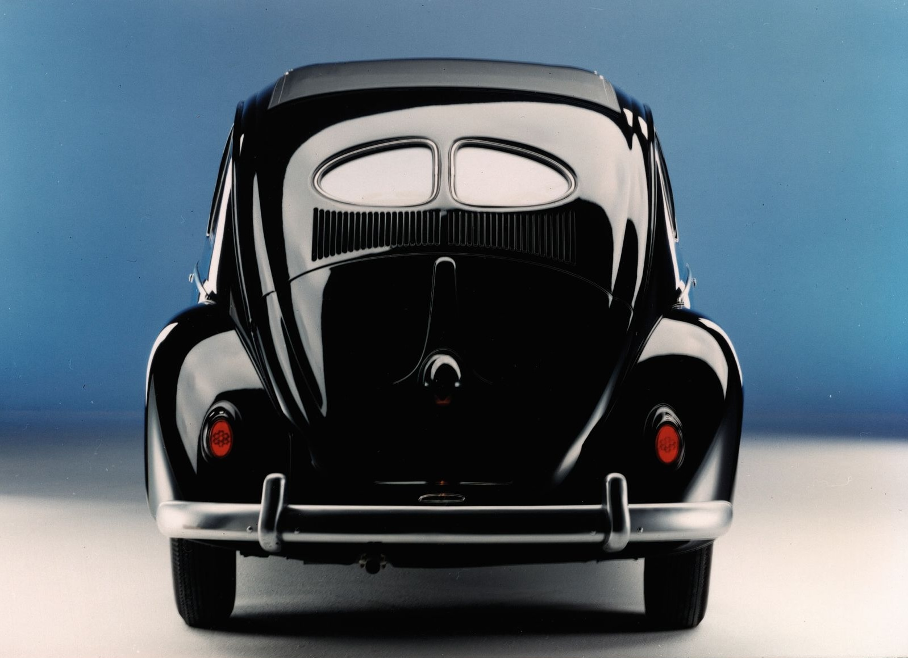

Il primo Maggiolino (anni '30)
Tutto ha origine nella Germania dei primi anni '30, quando comincia a farsi strada l'idea di un'auto popolare, economica e accessibile a un largo numero di famiglie: la "Volkswagen", letteralmente "auto del popolo". A elaborarne il progetto tecnico è l'ingegnere “Ferdinand Porsche”, che fin dai primi anni '30 lavora a un veicolo dalle linee arrotondate, con motore posteriore raffreddato ad aria e una semplicità meccanica pensata per garantirne l'affidabilità e i costi di gestione contenuti.
Il 26 maggio 1938 Adolf Hitler pone la prima pietra dello stabilimento di Wolfsburg, annunciando ufficialmente il nome "KdF-Wagen" (Kraft durch Freude, "la forza attraverso la gioia"), presto abbandonato in favore del più semplice "Volkswagen". Lo scoppio della Seconda guerra mondiale, l'anno seguente, blocca però la produzione su larga scala: la fabbrica viene infatti convertita alla produzione bellica. È solo nel 1945, con la riapertura dello stabilimento sotto il controllo delle forze britanniche, che la produzione del Maggiolino può finalmente decollare.
Da quel momento la crescita è inarrestabile: nel 1955 le vendite estere superano per la prima volta quelle sul mercato tedesco, e negli Stati Uniti — dove il nome "Beetle" compare per la prima volta su un articolo del New York Times già nel 1938 — le vendite annue passano da poche centinaia di unità negli anni '50 a oltre 560.000 esemplari nel 1968, anno di picco assoluto. Un contributo fondamentale a questo successo arriva dalla celebre campagna pubblicitaria "Think Small", lanciata nel 1959 dall'agenzia Doyle Dane Bernbach, che ribalta i codici della pubblicità automobilistica dell'epoca e trasforma il Maggiolino in un'icona delle controculture giovanili americane degli anni '60. Il Maggiolino resterà in produzione, con modifiche progressive ma senza mai stravolgerne l'impostazione originale, fino al 2003, anno in cui l'ultimo esemplare — la cosiddetta "Última Edición" — esce dallo stabilimento messicano di Puebla. Il bilancio finale è impressionante: oltre 21,5 milioni di esemplari prodotti in ottant'anni di storia, un record che lo consacra come l'auto più prodotta al mondo su una singola piattaforma.
